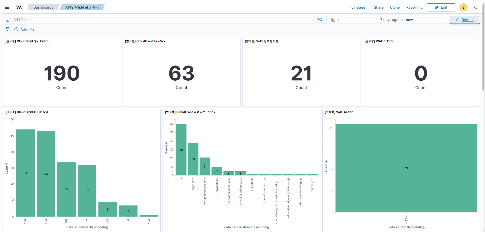

2. Wazuh를 통한 로그 수집·탐지·분석
Wazuh는 여러 로그 원천에서 생성되는 보안 이벤트를 수집하고, 규칙 기반으로 이상 행위를 탐지하며, Dashboard에서 조사 가능한 형태로 제공하는 SIEM 구성 요소이다.
본 프로젝트에서는 애플리케이션 로그만으로 판단하지 않고 CloudTrail, CloudWatch Logs 및 Kubernetes 실행 문맥을 함께 확인하여 사건의 신뢰도를 높인다.
- Wazuh CloudFront Dashboard 예시
{kind=link}

2.1 로그 수집 대상과 역할
| 로그 원천 | 수집·확인 내용 | 분석 목적 |
|---|---|---|
| DVWA 애플리케이션 로그 | 요청 시각, 경로, 실행 단계, 결과, Pod 정보 등 안전한 감사 필드 | IMDS 접근과 비정상 명령 실행의 시작점 확인 |
| CloudWatch Logs | CloudTrail·WAF·DVWA·CloudFront Log Group | AWS API·웹 요청·애플리케이션 실행 기록의 주기적 수집과 비교 |
| 보안 로그 S3 | ALB Access Log | 웹 요청의 경로·응답 코드·원본 IP 확인 |
| CloudTrail Management Event | IAM, S3 정책 등 AWS 관리 작업 | 권한·정책 변경의 행위자와 시각 확인 |
| CloudTrail S3 Data Event | GetObject, PutObject, DeleteObject 등 객체 접근 | 실제 S3 객체 접근 여부와 IAM Role Session 확인 |
| Kubernetes 메타데이터 | Namespace, Pod, 컨테이너, Worker Node | 이벤트가 발생한 워크로드 문맥 확인 |
2.2 Polling과 Push 기반 수집 구조
본 환경은 로그의 성격에 따라 Polling과 Push 방식을 함께 사용한다.
Wazuh AWS 모듈은 하나의 5분 주기로 두 저장 위치를 Polling한다. 보안 로그 S3에서는 ALB Access Log를 읽고, CloudWatch Logs에서는 CloudTrail·WAF·DVWA·CloudFront Log Group을 읽는다. 따라서 S3와 CloudWatch Logs를 모두 Polling하지만, 같은 CloudTrail 입력을 두 경로에서 중복 수집하는 구조는 아니다. CloudTrail의 S3 사본은 장기 보관과 증적 재분석에 사용한다.
Push는 DVWA 로그를 CloudWatch Logs에서 Lambda·SQS·Local Bridge를 거쳐 Wazuh로 전달하는 저지연 경로이다. 안전한 감사 필드와 해시만 전달하며, 명령 원문·응답·자격증명·쿠키는 Wazuh Push 데이터에 저장하지 않는다. 전달 과정은 유실보다 중복을 허용하는 구조이므로 동일 이벤트가 재전달될 가능성을 고려해야 한다.
DVWA 저지연 경로: CloudWatch Logs → Lambda·SQS·Local Bridge → Wazuh → Rule100102·100110S3 객체 접근 탐지: CloudTrail Data Event → CloudWatch Logs → Wazuh 5분 Polling → Rule
100111ALB 요청 로그: ALB → 보안 로그 S3 → Wazuh 5분 Polling
Wazuh Dashboard에서 Rule
100110과 Rule100111의 로그 원천 및 Alert가 확인되는 화면캡션: DVWA Push를 통해 수집된 IMDS 역할 탐색 및 자격증명 접근 단계

- wazuh에서 탐지된 IMDS 접근 단계

2.3 규칙 기반 탐지와 경보 생성
Wazuh는 수집한 로그의 필드를 규칙과 비교하여 Alert를 생성한다. 시연의 핵심 규칙은 Push 전송 건전성을 확인하는 Rule 100102, IMDS 자격증명 엔드포인트 접근을 조기 탐지하는 Rule 100110, S3 객체 바이트 반환을 확정하는 Rule 100111이다.
Rule 100102는 transport=push, source=dvwa, event_type=wazuh.push.validation, training_marker=SAFE_VALIDATION_EVENT를 모두 만족한 안전한 검증 이벤트가 Wazuh까지 도착했음을 확인한다. 공격 탐지 Rule이 아니라 저지연 전달 경로의 건전성 Rule이다.
Rule 100110은 DVWA에서 EC2 IMDS 자격증명 엔드포인트를 대상으로 실행한 명령이 출력을 반환한 사실을 저지연으로 탐지한다. 이는 조사가 필요한 초기 이상 징후이며, 자격증명 원문 획득이나 실제 AWS 권한 악용을 단독으로 확정하지 않는다.
Rule 100111은 CloudTrail S3 Data Event에서 승인된 Node Role과 검증용 객체의 GetObject 성공을 확인한다. httpStatusCode=200과 bytesTransferredOut>0을 기준으로 실제 객체 바이트 반환 사실을 탐지한다.
| 구분 | 조기 탐지 | 고신뢰 S3 확인 |
|---|---|---|
| 활성 Rule | 100110 | 100111 |
| 주요 근거 | DVWA의 IMDS 자격증명 엔드포인트 대상 명령 실행 | CloudTrail S3 Data Event |
| 판단 결과 | IMDS 관련 명령의 출력 반환 | 검증용 S3 객체의 실제 바이트 반환 |
| 현재 상태 | Runtime 탐지 검증 완료 | Runtime 탐지 검증 완료 |
| 목표 대응 | 고정 DVWA Workload 격리 | DVWA low → impossible 변경 |
2.4 탐지에서 자동 대응으로 연결되는 핵심 코드
wazuh_manager.conf — S3와 CloudWatch Logs를 5분 주기로 Polling한다.
<wodle name="aws-s3">
<interval>5m</interval>
<bucket type="alb">...</bucket>
<service type="cloudwatchlogs">
<aws_log_groups>/aws/cloudtrail/aws-topology-security</aws_log_groups>
</service>
</wodle>capital_one_rules.xml — Push 건전성, IMDS 출력 반환, S3 객체 바이트 반환을 서로 다른 조건으로 판정한다.
<rule id="100102" level="3">
<field name="payload.event_type">^wazuh\.push\.validation$</field>
<field name="payload.training_marker">^SAFE_VALIDATION_EVENT$</field>
</rule>
<rule id="100110" level="12">
<field name="payload.context.stage">^imds_credential_fetch$</field>
<field name="payload.context.status">^output_returned$</field>
</rule>
<rule id="100111" level="14">
<field name="eventName">^GetObject$</field>
<field name="additionalEventData.httpStatusCode">^200$</field>
<field name="additionalEventData.bytesTransferredOut">^[1-9][0-9]*$</field>
</rule>observability/wazuh/integrations/custom-shuffle-soc — 자동 대응 대상 Rule만 승인 필드로 정규화하여 Shuffle Webhook으로 보낸다.
if rule_id == EXPECTED_WORKLOAD_RULE_ID:
sanitized = build_sanitized_workload_alert(alert)
elif rule_id == EXPECTED_COMPROMISE_RULE_ID:
sanitized = build_sanitized_compromise_alert(alert)
else:
return 0
send_to_shuffle(sanitized, webhook_url, webhook_secret)이 코드는 Wazuh가 직접 Pod나 DVWA 설정을 바꾸는 것이 아니라, Rule 100110·100111 Alert를 검증·정규화하여 Shuffle의 고정 대응 절차로 넘기는 경계이다.
두 Rule은 서로 독립적으로 발생한다. Wazuh가 선행 Alert를 근거로 다음 Alert를 자동 확정하는 것은 아니며, 관제자가 Timeline에서 시간과 이벤트 식별자를 비교하여 같은 공격 흐름인지 조사한다.
Rule 100103은 일반 IMDS 관측과 기존 Dashboard 보존용이며, 현재 Capital One 자동화 대상 Rule은 아니다.[이미지 삽입 위치 — 탐지 증적]Wazuh Dashboard에서 Rule
100110, Rule100111, Alert 시각 및 로그 원천이 함께 확인되는 화면캡션: IMDS 접근 징후와 S3 객체 반환 성공에 대한 Wazuh 독립 탐지 결과

- IMDS 접근 기록, S3 접근 기록 모두 조회할 수 있음.

2.5 Dashboard 기반 상관분석
Wazuh Dashboard에서는 단일 Alert만 확인하는 것이 아니라, 같은 시간대의 애플리케이션 로그, Kubernetes 실행 정보 및 CloudTrail 이벤트를 연결하여 분석한다. 분석 시에는 다음 항목을 우선 비교한다.
- DVWA 이벤트 시각과 CloudTrail 이벤트 시각
- Push
event_id와 CloudTraileventID의 개별 원본 식별값
- Namespace, Pod, 컨테이너 및 Worker Node
- IAM Role Session과
userIdentity.arn
- S3 Bucket, Object Key 및 API 작업명
httpStatusCode와bytesTransferredOut
- Source IP 및 User Agent
Rule 100110과 Rule 100111은 자동으로 인과관계가 연결되지 않는다. 관제자는 Timeline Dashboard에서 각 Alert의 시각, 이벤트 식별자, IAM Role 및 S3 객체 정보를 비교하여 동일 공격 흐름인지 판단한다.
Capital One Incident Timeline에서 Rule
100110, Rule100111, DVWA 이벤트 및 CloudTrail 이벤트가 같은 시간창에 표시된 화면캡션: 독립적으로 발생한 IMDS 및 S3 탐지 이벤트의 시간 기반 상관분석

2.6 정리
Wazuh는 S3의 ALB 로그와 CloudWatch Logs의 CloudTrail·WAF·DVWA·CloudFront 로그를 Polling하고, DVWA Push 로그를 별도 저지연 경로로 수집한다. Rule 100102는 Push 경로의 건전성을, Rule 100110은 IMDS 자격증명 엔드포인트 출력 반환을, Rule 100111은 S3 객체의 실제 바이트 반환을 각각 확인한다. Rule 100110·100111은 Wazuh Integration에서 승인 필드로 정규화되어 Shuffle의 고정 대응 절차로 연결된다. 특정 시연 실행의 성공 여부는 해당 TAKE의 Wazuh Alert, Shuffle 실행, GitHub Actions 및 Argo CD 반영 증거로 별도 확인해야 한다.
참고: Wazuh 구성 문서